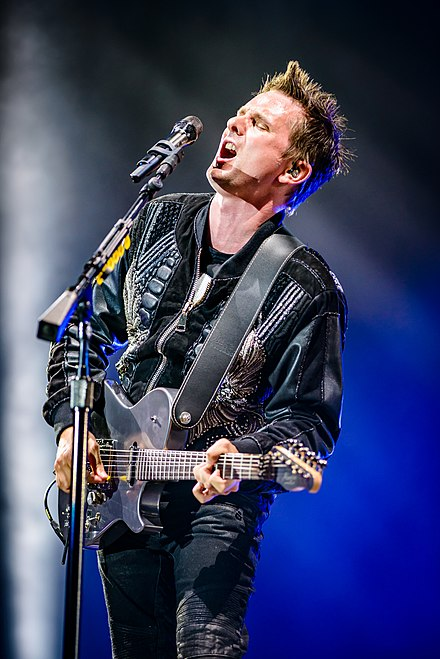
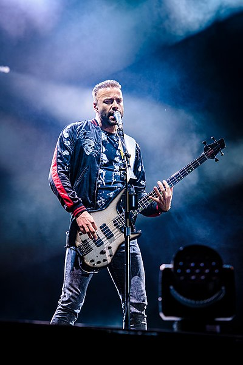

About :
Muse are an English rock band from Teignmouth, Devon, formed in 1994. The band consists of Matt Bellamy (lead vocals, guitar, keyboards), Chris Wolstenholme (bass guitar, backing vocals), and Dominic Howard (drums). Muse released their debut album,
Showbiz, in 1999, showcasing Bellamy's falsetto and a melancholic alternative rock style. Their second album, Origin of Symmetry (2001), incorporated wider instrumentation and romantic classical influences and earned them a reputation for
energetic live performances. Absolution (2003) saw further classical influence, with strings on tracks such as "Butterflies and Hurricanes", and was the first of six consecutive UK number-one albums.
Black Holes and Revelations (2006) incorporated electronic and pop elements, displayed in singles such as "Supermassive Black Hole", and brought Muse wider international success.
The Resistance (2009) and The 2nd Law (2012) explored themes of government oppression and civil uprising and cemented Muse as one of the world's major stadium acts.
Rolling Stone stated the band possessed "stadium-crushing songs".
Topping the US Billboard 200, their seventh album, Drones (2015), was a concept album about drone warfare and returned to a harder rock sound.
Their eighth album, Simulation Theory (2018), prominently featured synthesisers and was influenced by science fiction and the simulation hypothesis.
Muse have won numerous awards, including two Grammy Awards, two Brit Awards, five MTV Europe Music Awards and eight NME Awards.
In 2012 they received the Ivor Novello Award for International Achievement from the British Academy of Songwriters, Composers and Authors.
As of June 2016, they have sold over 30 million albums worldwide

Matthew James Bellamy (born 9 June 1978) is an English singer, musician, and songwriter. He is primarily known as the lead vocalist, guitarist, pianist, and primary songwriter for English rock band Muse. He is recognised for his eccentric stage
persona, wide tenor vocal range and musicianship.
Dominic James Howard (born 7 December 1977) is an English musician who is the drummer and co-founder of the rock band Muse.

Christopher Tony Wolstenholme (born 2 December 1978) is an English musician. He is the bassist and backing vocalist for the rock band Muse.